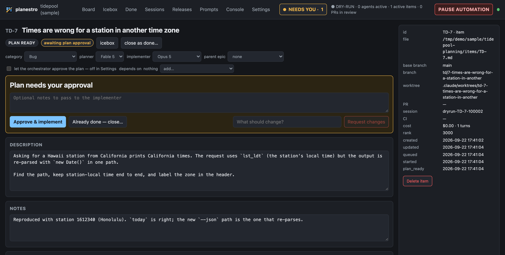
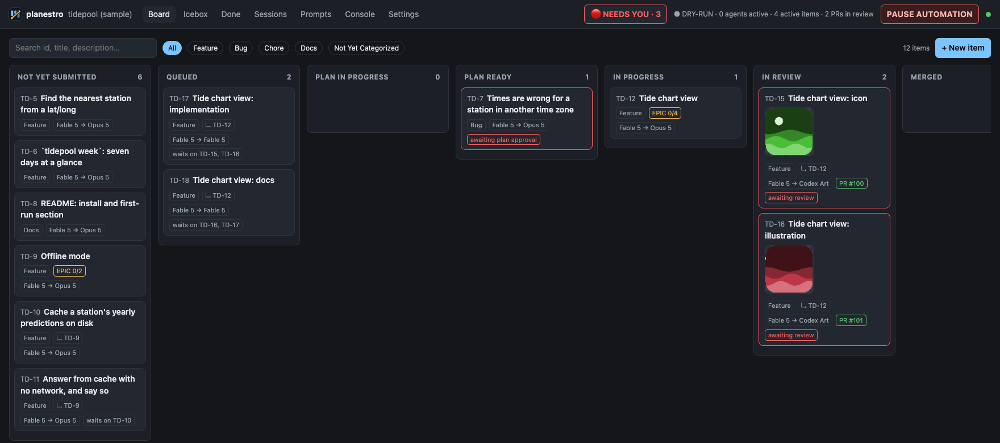
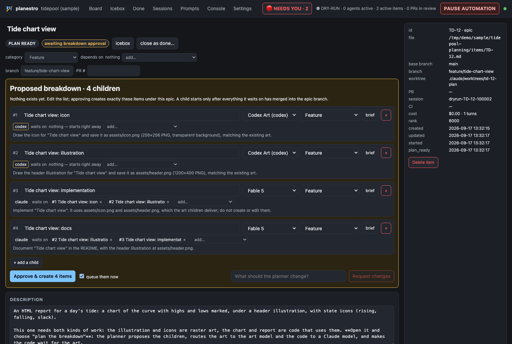
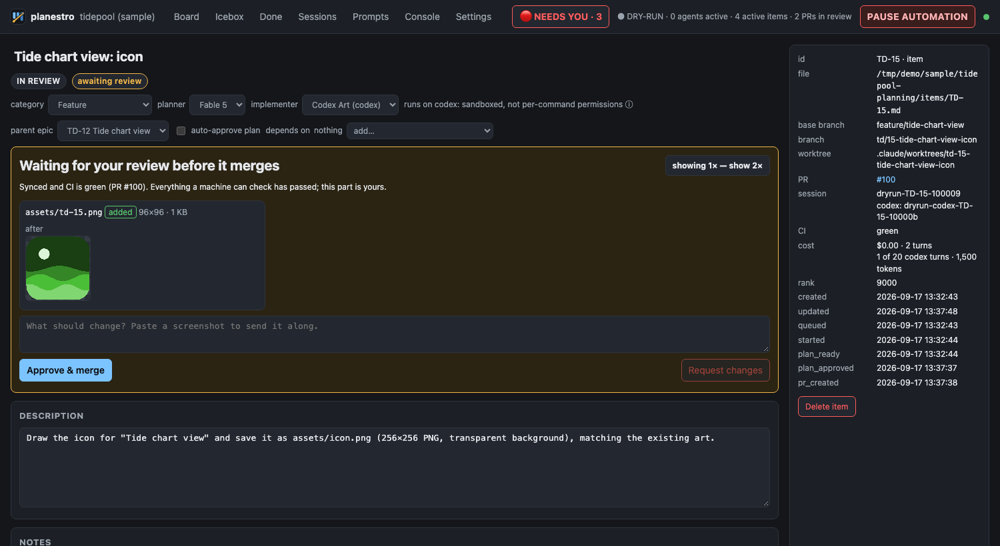
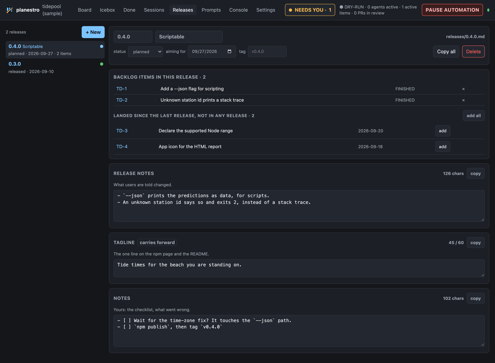

One backlog. Any agent. You conduct.
planestro is a local tool that turns a markdown backlog into merged pull requests — for a web app, an API, anything that lives in a git repository with CI. Claude Code plans each item, Claude Code or the Codex CLI implements it, and plain deterministic code does the git, the CI waits, the rebases and the merging. Whenever a decision is yours, it stops and asks — and picks the same conversation back up when you answer.
Your backlog is a folder of markdown
One file per item: a description, notes, the plan, and a log of everything that happened to it. Queue an item and planestro makes a worktree and a branch, has Claude explore and write a plan, and waits for you to approve it. Then Claude or Codex does the work in that worktree, and it is pushed, opened as a pull request, kept in sync with its base, checked by CI, merged, and cleaned up.
Queue several and they run side by side, each in its own worktree. A merge queue brings each branch up to date with the base and waits for green CI, so they land one after another on a base that stays green.
The agent never pushes, merges or deletes anything. Code does that, and only with proof: a worktree is removed after a fresh fetch shows its commits on the base branch, and not before.

One feature, split across agents
Each model you configure carries a line saying what it is for. Write one epic, and the planner proposes the child items, routes each to the model that fits, and says which waits on which. A program checks the list before you see it, so an unknown model or a dependency loop goes back to the planner, not to you. Then you edit it and approve, and the children ship together as one pull request.
It was built for pictures and code: a game on the App Store, Hurricane Harrison, is made with it every day. The raster art goes to a Codex model that can generate images, and the code that uses the art goes to Claude and waits for it.


Art is reviewed by eye
Codex draws in its own worktree and commits. The pull request goes through sync and CI like any other. Then, instead of merging, it parks: the images the branch added or changed, read from git, before beside after. Approve it, or send it back to the same Codex conversation with a note and a pasted screenshot.
Code is told what arrived
When the art merges, planestro records the files it delivered. The code item's worktree is cut from a branch that already holds them, and its prompt lists each one with its size. If one is missing, the worker says so. It does not improvise a stand-in.

Releases, next to the backlog
What shipped lives beside what was planned: one file per version with its release notes, its store copy and the items that went out in it. Sections are yours to define, each with a store's character limit if it has one, and the copy that rarely changes carries forward to the next release. The page offers the work that landed since the last release; you decide what goes in.

Why you can leave it running
An agent that writes code is the easy part. These are the rules everything around it is held to.
- Files are the truth
- Items, prompts and a journal, in a git repository with commits you can read. Everything works without the tool: grep it, edit it, diff it.
- A state machine, not a model, knows the state
- Git, worktrees, pull requests, CI polling, merging and cleanup are code. The models plan, implement and make judgment calls. They never poll.
- Nothing waits on you
- A plan to approve, a question, a permission, a picture to look at: the request is saved, the agent's process exits, and your answer resumes the same conversation, after an hour or after a restart.
- Deleting needs evidence
- No worktree or branch is removed because state says it should be safe. It takes a fresh fetch and a proof that the commits are on the base. Anything ambiguous blocks with a reason.
- Two agents, two kinds of trust, stated plainly
- A Claude worker asks before anything unusual, one command at a time. A Codex worker cannot ask, so it runs in a sandbox that cannot write outside its worktree or reach the network; a task that needs a download stops and says so. Neither can push.
- Dry-run, and one big lever
- Dry-run logs every command a live engine would run, against fakes. Pause automation lets running work finish and starts nothing new, across restarts.
Try it in a minute
No repository, GitHub account or agent login needed. The sample is a fictional project with a full backlog, served in dry-run: git, GitHub and both agents are the fakes the test suite uses, so the whole lifecycle really runs.
git clone https://github.com/gravesisme/planestro
cd planestro
npm install && npm run build
npm run sample- Drag a card to Queued. A plan appears and the card turns red: it needs you.
- Open it, read the plan, approve. Watch it reach Done. The Console shows every command a live engine would have run.
- Open Releases: 0.4.0 is being put together, with two finished items still to place.
- For one feature split across two agents, open the Tide chart view epic and choose Plan the breakdown. Approve the children, approve the art, and watch the code start only then.
Getting startedThe mixed-agent walkthroughArchitectureSource on GitHub